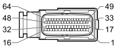

M010B ENGINE MANAGEMENT CONTROL UNIT (ENGINE)
- Path
- Electrical equipment > 3 CONNECTORS > M INTERMITTENT AND TIMED ELECTRONIC DEVICES > M010 ENGINE MANAGEMENT CONTROL UNIT > M010B ENGINE MANAGEMENT CONTROL UNIT (ENGINE)
- Kind
- connector pinout (pin -> wire colour -> other end)
- Applies to
- engines: 1.8; all production periods
- Interactive page
- https://sloeber94.github.io/elrnDB-fCrm/en/#/194005257
Applies to: engines: 1.8; all production periods

Wiring | Colour |
|---|---|
_ |
Pin | Cable | Destination | |||
|---|---|---|---|---|---|
Sec.. | Colour | Node | Connect. | Pin | |
1 | 0,5 | HG (grey with yellow stripe) | X | 6 | |
2 | |||||
2 | 0,5 | HG (grey with yellow stripe) | X | 6 | |
1 | |||||
3 | 0,5 | NV (black with green stripe) | 1 | ||
4 | 0,75 | CB (orange with white stripe) | 1 | ||
5 | 0,5 | HR (grey with red stripe) | 1 | ||
6 | 0,5 | SCH (shielded cable) | - | ||
8 | 0,5 | SG (pink with yellow stripe) | 4 | ||
9 | 0,5 | GL (yellow with blue stripe) | 1 | ||
10 | 0,5 | G (yellow) | 1 | ||
11 | 0,5 | SCH (shielded cable) | - | ||
12 | 0,5 | V (green) | 2 | ||
14 | 0,5 | NV (black with green stripe) | 1 | ||
17 | 0,5 | CR (orange with red stripe) | X | 5 | |
18 | |||||
18 | 0,5 | CR (orange with red stripe) | X | 5 | |
17 | |||||
19 | 0,5 | GV (yellow with green stripe) | 1 | ||
21 | 0,5 | HM (grey with brown stripe) | 1 | ||
22 | 0,5 | HB (grey with white stripe) | 1 | ||
23 | 0,5 | VB (green with white stripe) | 4 | ||
24 | 0,5 | ZG (violet with yellow stripe) | 2 | ||
25 | 0,5 | ZG (violet with yellow stripe) | See K036B ENGINE COOLANT TEMPERATURE SENSOR/SENDER UNIT (ENGINE) | 2 | |
26 | 0,5 | H (grey) | 2 | ||
27 | 0,5 | L (blue) | 2 | ||
28 | 0,5 | Z (violet) | 1 | ||
29 | 0,5 | SN (pink with black stripe) | 4 | ||
31 | 0,5 | RZ (red with violet stripe) | X | 3 | |
32 | |||||
32 | 0,5 | RZ (red with violet stripe) | X | 3 | |
31 | |||||
33 | 0,5 | LB (blue with white stripe) | X | 4 | |
34 | |||||
34 | 0,5 | LB (blue with white stripe) | X | 4 | |
33 | |||||
35 | O,5 | M (brown) | 1 | ||
36 | 0,5 | HL (grey with blue stripe) | 1 | ||
39 | 0,5 | MB (brown with white stripe) | 2 | ||
40 | 0,5 | ZN (violet with black stripe) | 6 | ||
41 | 0,5 | A (light blue) | 2 | ||
42 | 0,5 | GR (yellow with red stripe) | X | 3 | |
3 | |||||
3 | |||||
2 | |||||
43 | 0,5 | NZ (black with violet stripe) | 2 | ||
44 | 0,5 | SCH (shielded cable) | - | ||
46 | 0,5 | RV (red with green stripe) | 2 | ||
47 | 0,5 | BZ (white with violet stripe) | X | 5 | |
48 | |||||
48 | 0,5 | BZ (white with violet stripe) | X | 5 | |
47 | |||||
49 | 0,5 | MV (brown with green stripe) | X | 3 | |
50 | |||||
50 | 0,5 | MV (brown with green stripe) | X | 3 | |
49 | |||||
53 | 0,5 | RB (red with white stripe) | 2 | ||
54 | 0,5 | CA (orange with light blue stripe) | 2 | ||
55 | 0,75 | C (orange) | 1 | ||
56 | 0,75 | CN (orange with black stripe) | 1 | ||
58 | 0,75 | NR (black with red stripe) | 1 | ||
59 | 0,5 | BV (white with green stripe) | 3 | ||
60 | 0,5 | HV (grey with green stripe) | See K036B ENGINE COOLANT TEMPERATURE SENSOR/SENDER UNIT (ENGINE) | 1 | |
61 | 0,5 | HN (grey with black stripe) | 2 | ||
62 | 0,5 | MN (brown with black stripe) | 2 | ||
63 | 0,5 | RN (red with black stripe) | 2 | ||
64 | 0,5 | LN (blue with black stripe) | 2 | ||
Topics linked from this page (23)
- 50 ENGINE
- A031 IGNITION MODULE
- K017 LAMBDA SENSOR ON CATALYZER
- K018 LAMBDA SENSOR ON CATALYZER - 2
- K030 INSUFFICIENT ENGINE OIL PRESSURE SENSOR
- K032 ENGINE OIL LEVEL SENSOR
- K036B ENGINE COOLANT TEMPERATURE SENSOR/SENDER UNIT (ENGINE)
- K041 AIR FLOW METER
- K046 RPM SENSOR
- K050 DETONATION SENSOR
- K106 INTAKE SIDE TIMING SENSOR
- K107 EXHAUST SIDE TIMING SENSOR
- K120 LINEAR SENSOR FOR FANS
- L010 FUEL VAPOUR RECOVERY SOLENOID VALVE
- L015 VARIABLE GEOMETRY SOLENOID VALVE
- N070A INJECTOR (ENGINE)
- N070B INJECTOR (ENGINE)
- N070C INJECTOR (ENGINE)
- N070D INJECTOR (ENGINE)
- N075 INTEGRATED THROTTLE CASING ACTUATOR
- N086 ELECTRONIC THERMOSTAT
- N092 PHASE SHIFTER SOLENOID VALVE ON INTAKE SIDE
- N093 PHASE SHIFTER SOLENOID VALVE ON EXHAUST SIDE
Topics that link to this page (89)
- A031 IGNITION MODULE (ENGINE)
- A031 IGNITION MODULE (ENGINE)
- K017 LAMBDA SENSOR ON CATALYZER (ENGINE)
- K017 LAMBDA SENSOR ON CATALYZER (ENGINE)
- K018 LAMBDA SENSOR ON CATALYZER - 2 (ENGINE)
- K018 LAMBDA SENSOR ON CATALYZER - 2 (ENGINE)
- K030 INSUFFICIENT ENGINE OIL PRESSURE SENSOR (ENGINE)
- K030 INSUFFICIENT ENGINE OIL PRESSURE SENSOR (ENGINE)
- K030 INSUFFICIENT ENGINE OIL PRESSURE SENSOR (ENGINE)
- K030 INSUFFICIENT ENGINE OIL PRESSURE SENSOR (ENGINE)
- K030 INSUFFICIENT ENGINE OIL PRESSURE SENSOR (ENGINE)
- K032 ENGINE OIL LEVEL SENSOR (ENGINE)
- K032 ENGINE OIL LEVEL SENSOR (ENGINE)
- K032 ENGINE OIL LEVEL SENSOR (ENGINE)
- K032 ENGINE OIL LEVEL SENSOR (ENGINE)
- K036 ENGINE COOLANT TEMPERATURE SENSOR/SENDER UNIT (ENGINE)
- K036 ENGINE COOLANT TEMPERATURE SENSOR/SENDER UNIT (ENGINE)
- K036 ENGINE COOLANT TEMPERATURE SENSOR/SENDER UNIT (ENGINE)
- K036 ENGINE COOLANT TEMPERATURE SENSOR/SENDER UNIT (ENGINE)
- K036B ENGINE COOLANT TEMPERATURE SENSOR/SENDER UNIT (ENGINE)
- K041 AIR FLOW METER (ENGINE)
- K041 AIR FLOW METER (ENGINE)
- K041 AIR FLOW METER (ENGINE)
- K041 AIR FLOW METER (ENGINE)
- K041 AIR FLOW METER (ENGINE)
- K044 AIR PRESSURE - TEMPERATURE SENSOR (ENGINE)
- K044 AIR PRESSURE - TEMPERATURE SENSOR (ENGINE)
- K044 AIR PRESSURE - TEMPERATURE SENSOR (ENGINE)
- K046 RPM SENSOR (ENGINE)
- K046 RPM SENSOR (ENGINE)
- K046 RPM SENSOR (ENGINE)
- K046 RPM SENSOR (ENGINE)
- K046 RPM SENSOR (ENGINE)
- K047 TIMING SENSOR (ENGINE)
- K047 TIMING SENSOR (ENGINE)
- K047 TIMING SENSOR (ENGINE)
- K048 ABSOLUTE PRESSURE SENSOR (ENGINE)
- K050 DETONATION SENSOR (ENGINE)
- K050 DETONATION SENSOR (ENGINE)
- K083 FUEL PRESSURE SENSOR (ENGINE)
- K083 FUEL PRESSURE SENSOR (ENGINE)
- K083 FUEL PRESSURE SENSOR (ENGINE)
- K106 INTAKE SIDE TIMING SENSOR (ENGINE)
- K107 EXHAUST SIDE TIMING SENSOR (ENGINE)
- K120 LINEAR SENSOR FOR FANS (ENGINE)
- L010 FUEL VAPOUR RECOVERY SOLENOID VALVE (ENGINE)
- L010 FUEL VAPOUR RECOVERY SOLENOID VALVE (ENGINE)
- L015 Variable geometry solenoid valve (ENGINE)
- L030 EGR SOLENOID VALVE (ENGINE)
- L030 EGR SOLENOID VALVE (ENGINE)
- L030 EGR SOLENOID VALVE (ENGINE)
- L064 FLOW MODIFYING SOLENOID VALVE (ENGINE)
- L064 FLOW MODIFYING SOLENOID VALVE (ENGINE)
- M010B ENGINE MANAGEMENT CONTROL UNIT (ENGINE)
- N070A INJECTOR (ENGINE)
- N070A INJECTOR (ENGINE)
- N070A INJECTOR (ENGINE)
- N070A INJECTOR (ENGINE)
- N070A INJECTOR (ENGINE)
- N070B INJECTOR (ENGINE)
- N070B INJECTOR (ENGINE)
- N070B INJECTOR (ENGINE)
- N070B INJECTOR (ENGINE)
- N070B INJECTOR (ENGINE)
- N070C INJECTOR (ENGINE)
- N070C INJECTOR (ENGINE)
- N070C INJECTOR (ENGINE)
- N070C INJECTOR (ENGINE)
- N070C INJECTOR (ENGINE)
- N070D INJECTOR (ENGINE)
- N070D INJECTOR (ENGINE)
- N070D INJECTOR (ENGINE)
- N070D INJECTOR (ENGINE)
- N070D INJECTOR (ENGINE)
- N070E INJECTOR (ENGINE)
- N075 INTEGRATED THROTTLE CASING ACTUATOR (ENGINE)
- N075 INTEGRATED THROTTLE CASING ACTUATOR (ENGINE)
- N075 INTEGRATED THROTTLE CASING ACTUATOR (ENGINE)
- N075 INTEGRATED THROTTLE CASING ACTUATOR (ENGINE)
- N075 INTEGRATED THROTTLE CASING ACTUATOR (ENGINE)
- N077 FUEL PRESSURE REGULATOR (ENGINE)
- N077 FUEL PRESSURE REGULATOR (ENGINE)
- N077 FUEL PRESSURE REGULATOR (ENGINE)
- N086 ELECTRONIC THERMOSTAT (ENGINE)
- N087 FUEL PRESSURE REGULATOR ON RAIL (ENGINE)
- N087 FUEL PRESSURE REGULATOR ON RAIL (ENGINE)
- N087 FUEL PRESSURE REGULATOR ON RAIL (ENGINE)
- N092 PHASE SHIFTER SOLENOID VALVE ON INTAKE SIDE (ENGINE)
- N093 PHASE SHIFTER SOLENOID VALVE ON EXHAUST SIDE (ENGINE)